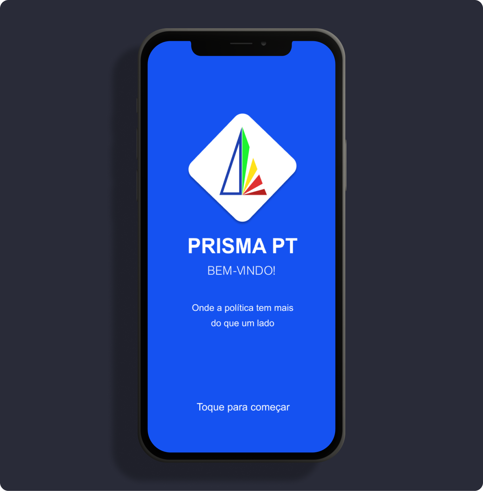
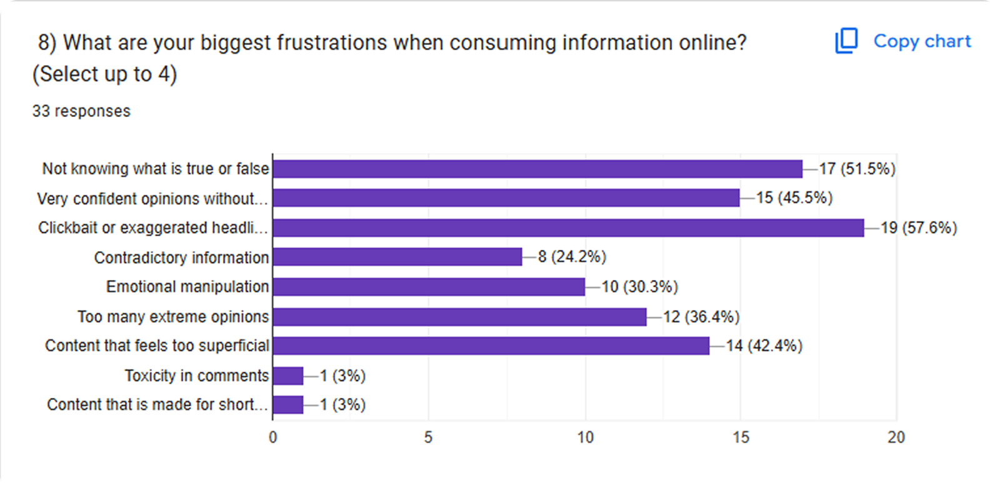
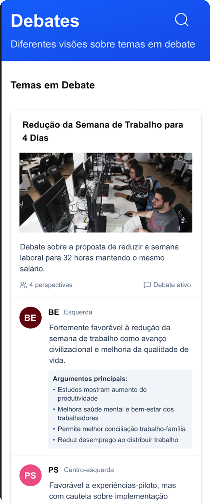
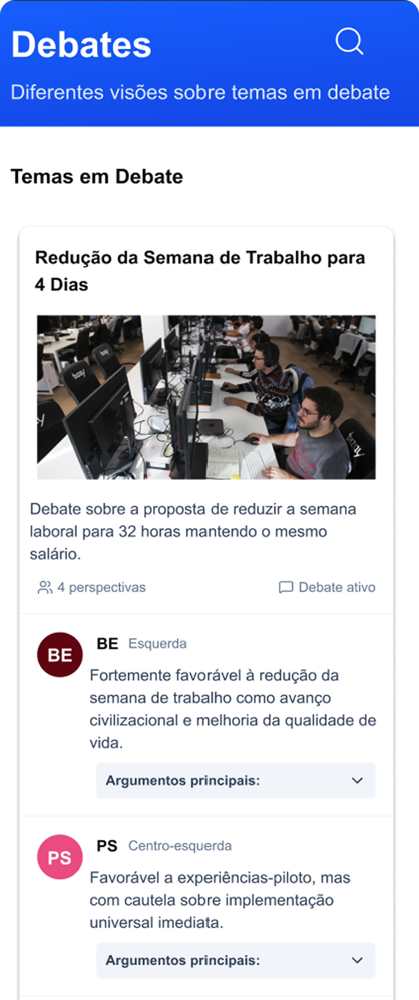

PROJECT 1

Prisma PT
A political news and learning app for young Portuguese adults.
OVERVIEW
Most people aged 18-35 learn about politics through social media: passively, impulsively, and without reliable sources. Prisma is a mobile app that turns scroll into structured understanding with verified news and side-by-side party positions designed for users who want to think for themselves. Research with 33 participants confirmed this gap, a usability test scored design 5/5 for ease of use and singled out the Debates view, which shows all party positions on one topic at once, as something no existing app offers.
THE PROBLEM
People scroll politics but never understand it.
A survey of 33 young adults found that over 60% spend more than an hour a day on social media, yet most feel confused or misinformed on political topics. Clickbait, absent sources, and opinions dressed as facts leave users with more anxiety than knowledge.

FULL PROCRESS
All UX stages and UI design choices can be found here in full detail
- 1. Empathy: desk research; questionnaire; personas; benchmarking (slides 2-12)
- 2. Strategy: user journey; user stories; How might we; Sitemap (slides 12-16)
- 3. Ideation: user flow; lo-fi, hi-fi wireframes; grid and layout (slides 17-23)
- 4. Prototyping: UI kit (slides 24-27)
- 5. Validation: usability testing (slides 28-39)
PROCESS SUMMARY
Built from research tested once it was real.
The design was fully build before anyone using it. That’s the opposite of the process I would choose if I had more time. This means that the usability test became high-stakes rather than iterative. What it revealed was useful: the Debates page had all party positions expanded by default, which was overwhelming. A single round of low-fi testing would probably have caught that sooner. The tester suggested collapsing to headings first, letting users open only what they wanted to read. That change made it into the final design.


FINAL DESIGN
Find the full prototype here.
OUTCOME
Usability testing scored 5/5 for ease of use and 5/5 for clarity. The tester called the Debates page “super important” - noting no existing product shows party positions side by side on one topic.
WHAT I WOULD DO NEXT
The tester suggested adding article links to news summaries, and using topic tags on the Debates page. I would increase the sample of usability tests and with users who have less prior political knowledge - the Concepts section is likely more important to them, and I haven’t validated that yet.